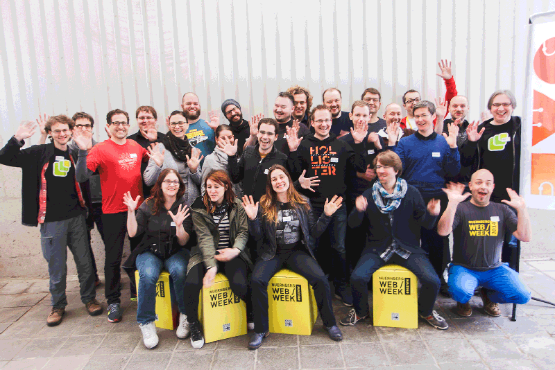

IndieWebWeek 2017
As you might have heard there will be two IndieWebCamps in May in Germany this year with a distance of only one week to each other. To use this great chance and give you an extra incentive to attend both camps we — that's Joschi & Marc — would like to invite you to join us for the first ever IndieWebWeek.
While we don't have a clear plan of what might happen during this week — maybe we could start some kind of collective effort on the first weekend and finish it on the second? — we work hard on the planning of some little extras for you. For example, there will be a small IndieWeb area directly at the beyond tellerrand conference venue in Düsseldorf and an open-door IndieWeb base camp at the tollwerkstatt in Nuremberg as of Thursday.
Don't miss to join us for our train ride from Düsseldorf to Nürnberg on Wednesday, May 17th — this is going to be fun! In case you hesitate because travel and accommodation expenses are beyond your possibilities, please have a look at our travel assistance fund below.
We're hoping to see you in May! :)
May 13th-14th: IndieWebCamp Düsseldorf 2017
Please register here for the IndieWebCamp Düsseldorf and don't forget to put yourself on the guest list (ping Marc via email or Twitter if you need help with that).
We'll try to come up with some accommodation suggestions for Düsseldorf and put them here shortly.
May 17th: Düsseldorf 🚅 Nürnberg 2017
Those of you who will attend both camps might be interested in a joint train ride between Düsseldorf and Nürnberg on Wednesday, May 17th. We'll most likely take the train leaving Düsseldorf at 10:12 a.m. (add it to your calendar). Depending on the number of people the price will be up to € 51 (special group tickets). We will buy the tickets on early Monday, March 20th, so if you're interested in joining us please contact Joschi immediately.
May 17th: Homebrew Website Club Nürnberg 2017
As you probably know, Wednesday is HWC day, so it goes without saying that there will be a Homebrew Website Club in Nuremberg on the evening we arrive. We meet around 18:00 at the tollwerkstatt to hack and improve on our personal websites before we — probably‽ — move on and go to the medieval downtown afterwards. Did we mention that Nuremberg lies in the heart of a region familiar for its hundreds of ancient breweries? 😎
You might also want to know that there's the Nürnberg Web Week from May 15th-22nd. Why not attend some of the ~80 mostly free events while you're in Nurmeberg? (The event schedule will be up on the website in 1-2 weeks)
May 18th: Evaluating technology — a master class workshop with Jeremy Keith
Not strictly IndieWeb related, but while you're here you might consider attending the full-day master class workshop Jeremy and I put together for Thursday, May 18th. We'll gather at the tollwerkstatt again and discuss many of the recent web technologies you've been hearing so much about. Browser APIs, dev tools, frameworks… What's hot? What's not? And how do you decide whether a particular technology is right for you?
Tickets for this exclusive intensive course are limited and available via Tito and XING ticket sales. At the time of this writing it's not too late for Early Birds — grab your reduced ticket until Monday, March 20th! We expect the ticket sales to go fast when the official Nürnberg Web Week schedule will be published next week.
May 20th-21st: IndieWebCamp Nürnberg 2017

Please register here for the IndieWebCamp Nürnberg and don't forget to put yourself on the guest list (ping Joschi via email or Twitter if you need help with that).
We'll come up with some accommodation suggestions for Nürnberg as well and put them here shortly — have a look again soon!
Travel Assistance
The IndieWeb community is building the foundation of a web controlled by individuals for themselves. It's crucial to have independent web creators from all backgrounds at the IndieWebCamps to have a rich discussion and build cool things.
Inspired by last year's IndieWeb summit — and with the help of some generous sponsors (details to follow shortly) — Joschi and Marc are pleased to provide a small travel assistance fund. If you are a member of a group that is typically underrepresented (e.g. if you are not hetero, white, cis and male), and otherwise could not afford to travel to one or both of the IndieWebWeek camps on your own, we might be able to assist you with travel and/or lodging costs.
If you think that you could benefit from this fund, please apply by getting in touch with Joschi and explaining your situation. Please make sure to apply no later than March 31st, 2017. You needn't be an IndieWeb expert or master hacker, just an excited participant willing to share and learn.
If you would like to contribute to this fund so that we can provide assistance to more individuals from a diverse background, please contact Joschi as well.